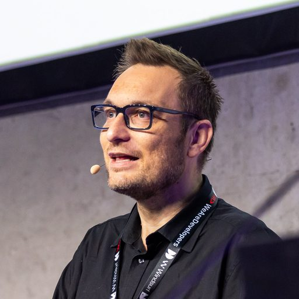
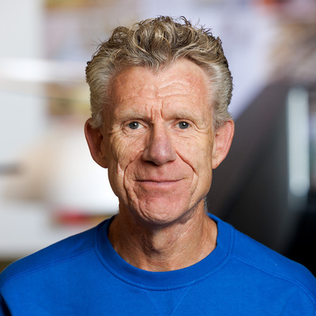
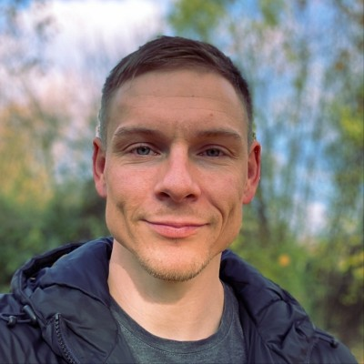

The people behind Native Federation — building the future of browser-native Micro Frontends.
Native Federation maintainer, MSc in Advanced Software Development, and Frontend R&D Software Engineer at ParnasSys. Drives the daily development and evolution of the Native Federation ecosystem.

Trainer, consultant, and programming architect with a focus on Angular. Google Developer Expert (GDE) who writes for O'Reilly, the German Java Magazine, and windows.developer. A regular speaker at international conferences.
The advisory board consists of senior engineers and architects from
leading companies using Native Federation in large-scale production
environments:
Siemens Energy · BMW · Dutch
Railways · DAZN · Santander
· Sanitas
Built Micro Frontend architectures at Deutsches Zahnärztliches Rechenzentrum and brings 10 years of Angular experience.

Used Native Federation for Dutch Railways and shares that hands-on experience in workshops and conference talks.

Helped migrate Siemens Energy's Angular Micro Frontend landscape from Module Federation to Native Federation across 15 teams.
Was responsible for BMW's federation-based Micro Frontend architecture spanning 70+ teams and evaluated Native Federation alongside Module Federation.
Designed DAZN's Micro Frontend architecture, is a well-known O'Reilly author for Micro Frontends, and previously worked at Amazon.
Worked with Module Federation and Native Federation for 4+ years across large healthcare and banking projects at Sanitas and Santander.